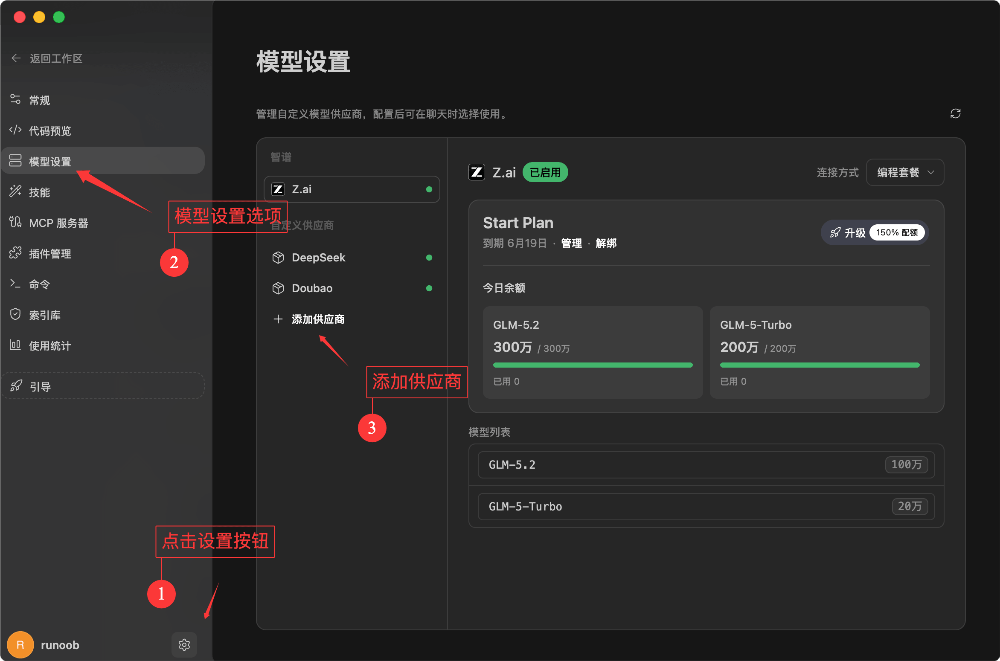
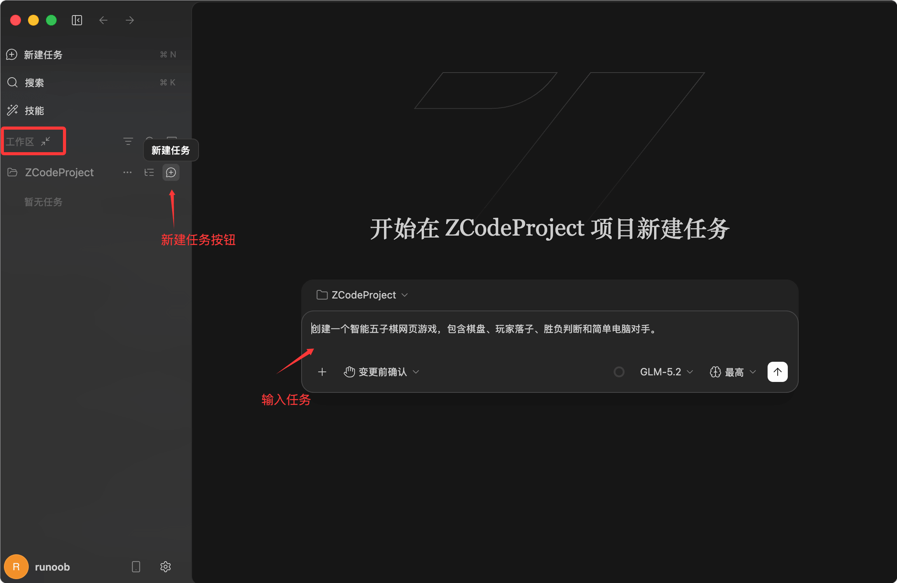
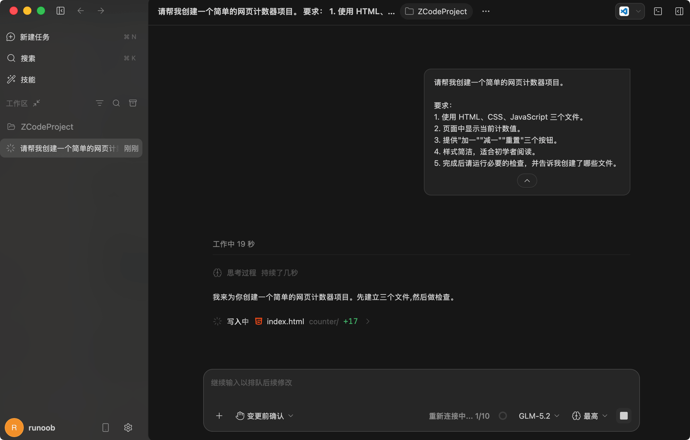
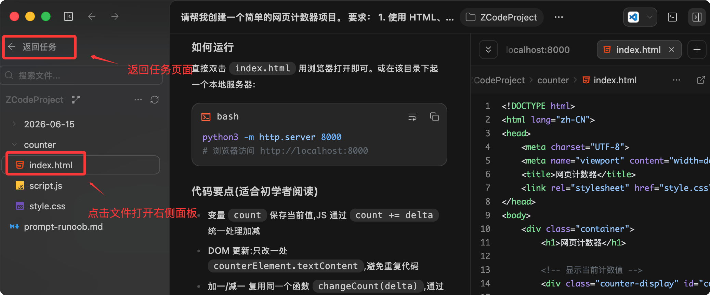

ZCode Getting Started Tutorial
ZCode is a developer agent development environment launched by Zhipu, also known as the Agentic Development Environment, abbreviated as ADE. Unlike traditional editors, it comes with an AI assistant that can deeply operate on projects, view projects, modify files, execute commands, and sort out code changes.
ZCode can connect AI agents to real projects, completing the entire development workflow of requirement analysis, code modification, testing, code review, and pre-launch checks in one place.
Ordinary AI tools can only generate scattered code snippets. ZCode supports issuing complete development tasks in natural language, making it suitable for users who want to drive development with natural language.

The core of ZCode is not simple chatting, but continuously advancing a complete task around a development goal.
| Concept | Description | Suitable Scenarios |
|---|---|---|
| ZCode | A development environment for AI agents. | For those who want to use natural language to advance real project development. |
| ZCode Agent | The agent responsible for understanding tasks, reading context, modifying code, and verifying results. | Complex requirement decomposition, code generation, debugging, testing. |
| Long Horizon Task | Development tasks that span a long time and involve many steps. | Refactoring modules, fixing complex bugs, implementing complete features. |
| Workspace | The place where ZCode handles project files, terminal, Git status, and task context. | Open an existing project, or create a new project in a directory. |
What ZCode Is Good For
ZCode is suitable for development work that requires continuous context. It can read files, understand project structure, execute commands, and provide a summary after changes are complete.
This kind of capability suits real engineering, not just one-off question-and-answer.
| Task Type | What You Can Ask ZCode to Do | Example Prompt |
|---|---|---|
| New Feature Development | Check the project structure based on requirements, create or modify related files. | Help me add a login page to this project and integrate it with the existing routing. |
| Bug Fixing | Locate the cause of the error, modify the code, and run verification commands. | Fix the issue where the page flickers after clicking a button on mobile. |
| Code Understanding | Sort out module relationships and explain the call chain of a feature from entry to implementation. | Help me explain how the payment flow of this project works. |
| Code Review | Check change risks, provide inline suggestions or improvement directions. | Please review the current changes, focusing on regression risks. |
| Release Preparation | Generate changelog, organize release notes, check Git status. | Generate a draft release note based on recent commits. |
Installing ZCode
After entering the official ZCode Chinese website, you can click the download entry on the homepage.
The official website address ishttps://zcode.z.ai/cn。
The official website page shows the currently available download versions, supporting Windows, macOS, and Linux. Usually, the official site shows the download button for the current system:

After downloading, just click to install:

Basic Preparation After Installation
On first launch, you will enter the "First Launch Setup" page. After completing it, click "Connect and Use" in the bottom-left corner to go to the login page:

If you want to use model services, you also need to complete API Key orCoding Planrelated configuration. You can also log in and then configure it on the settings page:

The official free quota is currently very limited and basically not enough. We recommend the following Coding Plan packages:
Next, let's takeByteDance Ark's Coding Planas an example for configuration. Visit ArkCoding Plan event, subscribe to a plan as needed. If usage is low, the Lite version is enough; if usage is very high, you can use the Pro version.
After a successful purchase, clickCreate Your API Key：

Then click the Create button:

Click the small eye icon below to see the API key. When needed, just copy it:

Different tools have different Base URL configurations depending on the compatible protocol:
- Tools compatible with the Anthropic API protocol:https://ark.cn-beijing.volces.com/api/coding
- Tools compatible with the OpenAI API protocol:https://ark.cn-beijing.volces.com/api/coding/v3
Here we choosehttps://ark.cn-beijing.volces.com/api/coding, set the API key to your own. The model list allows adding multiple models. Here fill inKimi-K2.6, you can also add other models such asDeepSeek-V4-Pro：

After adding, you can test whether the model is available:

You can see the added model in the bottom-right corner of the dialog box on the homepage:

ZCode provides pages for API Key configuration, usage statistics, user feedback, and support.

Using ZCode for the First Time
We can start with a simple project, asking ZCode to create a browser-based mini game, or asking it to explain the directory structure of an existing project.
This helps you quickly understand how ZCode works.
Opening or Creating a Workspace
A workspace can be understood as the project directory ZCode is currently processing.
You can open an existing project directory, or start a new project in an empty directory.
ZCode will read files, execute commands, and manage changes within this directory.
Creating a New Task
In ZCode, a task is the basic unit that drives the agent's work.
The official website examples show how to describe tasks using natural language.
The page also displays the new task shortcut.⌘N。
Example of creating a new task:
创建一个智能五子棋网页游戏，包含棋盘、玩家落子、胜负判断和简单电脑对手。

Observing the Execution Process
Once a task starts, ZCode analyzes the project based on the goal and proceeds step by step.
You can see task progress, execution logs, file changes, terminal output, and Git status.
This is more reliable than just copying a piece of AI-generated code, because it can put the code back into the real project for verification.
| Interface Area | Purpose | What Beginners Should Pay Attention To |
|---|---|---|
| Task Progress | Displays the breakdown and completion status of the current task. | Confirm whether the agent is advancing according to the goal. |
| Terminal Output | Displays command execution results. | Watch for errors and whether verification commands pass. |
| File Changes | Shows files that were added, modified, or deleted. | Check whether the changes meet expectations. |
| Git Status | Shows the version control status of the current workspace. | Before committing, confirm that it only contains the changes you need. |
A Complete Beginner Example
Below we use a simple front-end project to demonstrate how to assign tasks to ZCode.
This example does not rely on a backend, making it suitable for beginners to understand the process.
Example
Requirements:
1. Use three files: HTML, CSS, and JavaScript.
2. Display the current counter value on the page.
3. Provide three buttons: "Add One", "Subtract One", and "Reset".
4. Keep the style simple and suitable for beginners to read.
5. After finishing, please run the necessary checks and tell me which files were created.
This prompt clearly tells ZCode what to create, which files to use, what features to include, and that the results need to be reported after completion.
The more specific the prompt is, the more likely the Agent's execution will match expectations.

Then a permission prompt will appear; grant the permission and click confirm:

Possible Generated Project Structure
If you run this task in an empty directory, ZCode may create a file structure similar to the one below.
counter-demo/ ├── index.html ├── styles.css └── app.js

You can view the source code:

Source code display effect:

How to Write Good Prompts for ZCode
ZCode can understand natural language, but that doesn't mean shorter prompts are always better.
A good prompt should include goal, scope, constraints, and acceptance criteria.
This allows the Agent to plan and execute more reliably.
| Component | Description | Example |
|---|---|---|
| Goal | Describe what you want to achieve in the end. | Add a user settings page. |
| Scope | Specify which parts should be changed and which should not. | Only modify the frontend page, do not change backend APIs. |
| Constraints | Specify tech stack, style, and compatibility requirements. | Use the existing component library, do not add new dependencies. |
| Acceptance criteria | Explain how to determine success after completion. | Running npm test passes, and the layout works properly on mobile. |
Example
Scope:
- Only modify files related to the login page.
- Do not modify backend APIs.
- Do not add third-party dependencies.
Requirements:
- Maintain the existing visual style.
- Adapt to mobile screens with a width of 375px.
- After modification, please explain which files were changed.
- If the project has test or check commands, please run them and report the results.
Don't just write "help me optimize it." This kind of prompt has too broad a scope, and the Agent will have difficulty determining what you really want.
Common Workflows
ZCode's advantage lies in linking the development process together.
You can take a task from requirement description to code modification, and then to validation and summary.
Creating a Feature from Scratch
When you want to create a new feature, first clarify the boundaries of the feature.
If the project already has a tech stack, also require ZCode to follow the existing conventions.
Example
Requirements:
- Use the project's existing routing approach.
- Reuse existing page layout components.
- The page includes three sections: title, introduction, and contact information.
- Do not add new dependencies.
- After completion, please list the files added and modified.
Understanding Existing Code
When you take over an unfamiliar project, you can first ask ZCode to explain the structure rather than immediately modifying code.
This helps reduce the risk of making unintended changes.
Example
Help me read the current project structure and explain:
- Where the application entry point is.
- Where routes are defined.
- Where API requests are encapsulated.
- What the build and test commands are, respectively.
Pre-Commit Checks
Before committing code, you can ask ZCode to review the current changes.
It can help you identify missing files, potential regressions, and missing tests.
Example
Focus on checking:
- Whether there are obvious bugs.
- Whether existing functionality is broken.
- Whether there are unused variables or debug code.
- Whether additional tests are needed.
Please provide a list of issues first; do not modify files directly.
Security Confirmation and Permissions
ZCode enters a confirmation flow before critical commands, file modifications, and high-privilege operations. This prevents the Agent from executing dangerous operations without your knowledge.

You can read the confirmation details before executing a command, and then decide whether to allow it.
| Operation type | Why confirmation is needed | Recommended practice |
|---|---|---|
| Modify files | Will change project code. | Confirm whether the file path and modification target are correct. |
| Delete files | May cause data loss. | Check the file content before deletion, and back it up if necessary. |
| Run commands | Commands may install dependencies, start services, or change the environment. | Confirm the purpose of the command, and avoid executing unknown high-risk commands. |
| Git operations | May affect commit history or the remote repository. | Check git status before committing and pushing. |
If you are not sure whether a command is safe, you can first ask ZCode to explain the command's purpose rather than allowing it to run directly.
Common Commands and Inspection Methods
ZCode can use the terminal to run project commands.
The specific commands depend on your project's tech stack.
Below are some commands that appear in official examples and common development scenarios.
| Command | Function | Example |
|---|---|---|
| pwd | View the current directory. | Confirm whether ZCode's current terminal is located in the project directory. |
| git status --short | View Git changes in a concise format. | Confirm which files have been modified before committing. |
| node --check app.js | Check JavaScript file syntax. | Verify whether app.js has syntax errors. |
| npm test | Run project tests. | Suitable for JavaScript or frontend projects. |
| npm run build | Run the project build. | Confirm that the project can be packaged correctly before release. |
$ git status --short M src/App.js M src/styles.css
The output above indicates that two files have been modified.
Before committing, you should confirm that these changes all match expectations.
Overview of Advanced Capabilities
In addition to desktop task execution, the ZCode documentation also mentions some advanced capabilities.
You don't need to master them all at once in the beginner stage, but you can first understand what problems they solve.
| Capability | Description | When to use |
|---|---|---|
| Remote Control | Track or control Agent tasks remotely. | When a task takes a long time and you want to keep checking progress after leaving your computer. |
| Bot Channel | Trigger and advance tasks via Feishu or WeChat Bot. | Team collaboration, mobile progress tracking, and remote supplementary instructions. |
| Skill | Provide specialized capabilities or workflows for specific tasks. | When repeatedly handling similar tasks, such as security audits, documentation generation, or test runs. |
| MCP servers | Connect external tools or data sources to the Agent. | When you need to connect a database, knowledge base, internal system, or specialized tools. |
| Sub-agents | Let different Agents handle different subtasks. | When a large task requires parallel exploration, review, or division of labor. |
Common Beginner Questions
Below are some common issues you may encounter when first starting to use ZCode.
Will ZCode Automatically Modify My Project Without Permission?
ZCode's critical operations go through a confirmation flow.
You should check the files it will modify and the commands it will run before allowing them.
If you only want it to read the project, you can explicitly write "do not modify files" in the prompt.
Should I Let ZCode Do Many Things at Once?
It is not recommended for beginners to give overly large tasks from the start.
A better approach is to break the task into smaller pieces.
For example, first ask it to understand the project structure, then modify a module, and finally run validation.
What to Do If a Task Fails
First check the terminal output and error messages.
Then ask ZCode to continue fixing based on the errors.
Don't rush to start a completely different task, or you may lose context.
When Is Manual Review Needed?
When business logic, permissions, security, payments, data deletion, or release operations are involved, manual review should be performed.
AI can help identify issues, but the final responsibility still rests with the developer.
Learning Suggestions
The best way to learn ZCode is not to memorize commands, but to practice starting with small tasks.
You can first use it to create a simple page, and then ask it to explain the generated code.
Next, try asking it to fix a small bug, and observe how it reads files, modifies code, and validates results.
Once you are familiar with this task-driven development approach, gradually use capabilities such as code review, release preparation, Remote Control, and Skill.
Other ExtensionsTreat ZCode as a development partner that can operate on projects, rather than a chatbot that only answers questions. This makes it easier to leverage its value.
Click to Share Notes
<p style="font-size:14px;">Notes should be an extension of the content of this article!</p><br> <p style="font-size:12px;"><a href="../tougao.html" target="_blank">Article submissions, click here</a></p> <p style="font-size:14px;"><a href="../w3cnote/runoob-user-test-intro.html" target="_blank">How to get a registration invitation code</a></p> <h3 class="text-muted"><i class="fa fa-info-circle" aria-hidden="true"></i> You must <a href=";.html" class="runoob-pop">log in</a> before sharing notes!</h3> <p><a href="../w3cnote/runoob-user-test-intro.html" target="_blank">How to get a registration invitation code</a></p>